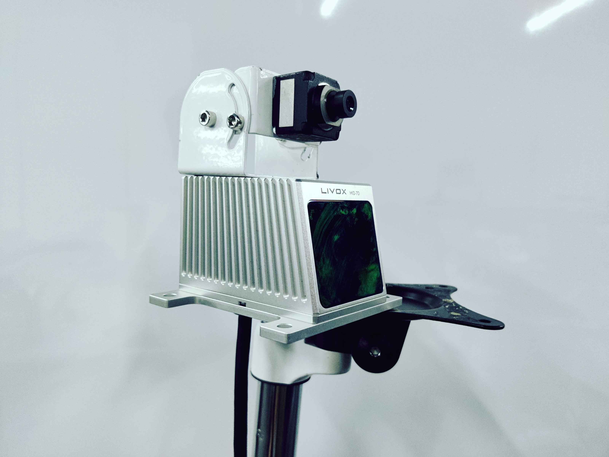
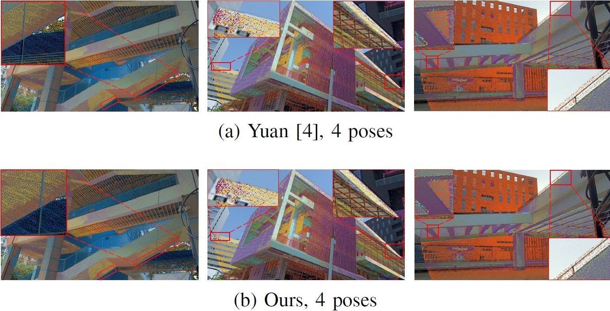
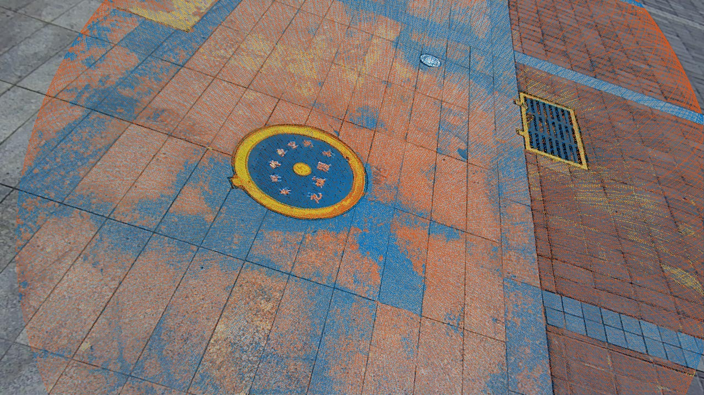
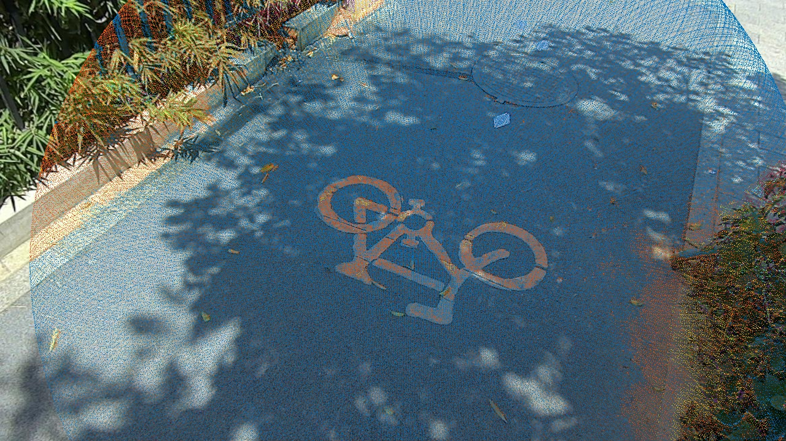
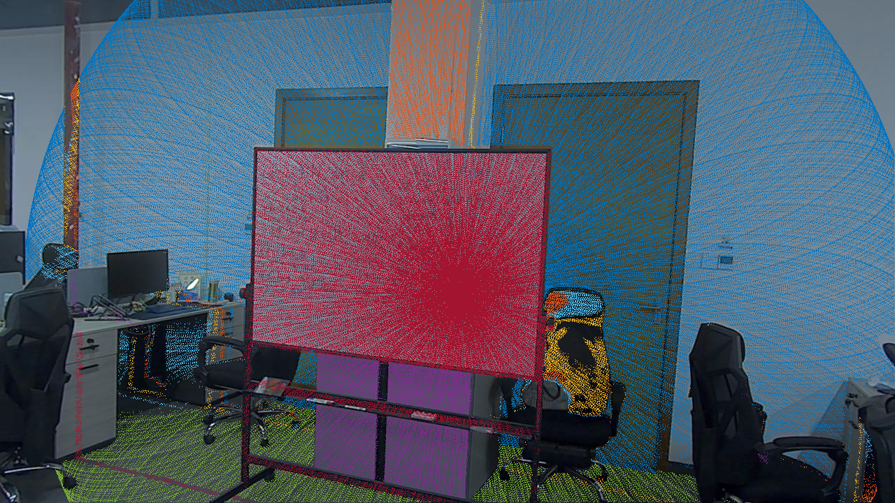
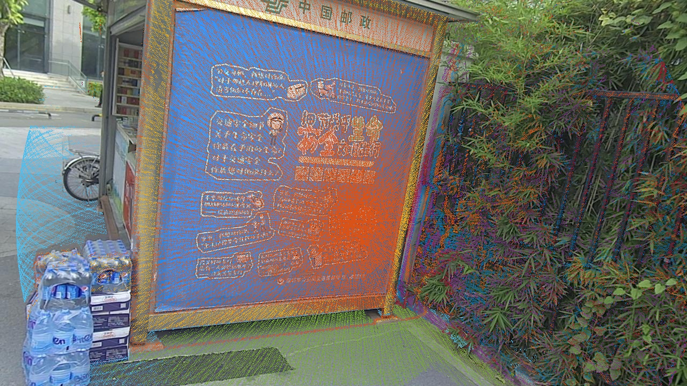

PBACalib
Targetless Extrinsic Calibration for High-Resolution LiDAR-Camera System Based on Plane-Constrained Bundle Adjustment
Introduction¶
In the autonomous driving industry, the resolution of the LiDAR equipped on the vehicle grows rapidly with reduced cost and the release of new solid-state LiDAR (e.g., Livox). However, most existing works focus on mechanical LiDAR (e.g., Velodyne) and rely on prepared artificial targets, such as checkerboard, circle, and sphere, which are sometimes unavailable. Besides, it is challenging to implement some old methods on dense LiDAR because of different data structures. For instance, the large number of bleeding points that exist around depth-discontinuous edges in dense LiDAR, degrade the performances of some edge extraction algorithms. Moreover, zero-valued and multi-valued mapping problems also make the mutual information-based method unstable. On the other hand, the mounting position and orientation of sensors depend on the actual needs, and it fails some calibration methods. Some other targetless methods resort to the depth-continuous edges of the environment.
In this case, LiDARs need to be mounted upwards to observe enough edges of the buildings for the calibration, which is not practical in some cases. Considering the above challenges, we propose PBACalib, which captures several pairs of images and point clouds around a plane with arbitrary texture to calibrate the extrinsics between dense LiDAR (livox) and camera. Our contirbutions are summerized as follows:
- A novel targetless extrinsic calibration method for high-resolution LiDAR and camera based on planeconstrained bundle adjustment. It only needs a common textured ground, wall, or other planes to accomplish the calibration.
- Validity analysis on the collected dataset. We theoretically analyze the distribution of the collected data and introduce a confidence factor to determine whether the input data is sufficient for calibration. Specific requirements are listed to guide users to stabilize the calibration result, which are: 1) we need at least four poses; 2) the target planes do not intersect at the same point; 3) at least three normal vectors are non-coplanar
- Evaluated with various simulation, real-world and comparison experiments, which reveal that the proposed method is accurate and robust. To benefit the community, we publicly release the source code on Github
Sensors¶

Experiments¶
The calibration results compared with other method¶

The projected points are colorized by points’ intensity value
Projecting points onto images with calibrated extrinsics¶




The projected points in top two figures (a)(b) are colorized by points’ intensity value. In the bottom two figures(c)(d), different colors represent different planes, which are iteratively extracted by plane RANSAC
Code¶
The dataset tool can be used by clicking the button below
Publications¶
- PBACalib: Targetless Extrinsic Calibration for High-Resolution LiDAR-Camera System Based on Plane-Constrained Bundle Adjustment
Feiyi Chen, Liang Li, Shuyang Zhang, Jin Wu and Lujia Wang
IEEE Robotics and Automation Letters, 2022
[paper] [supplementary] [bibtex]